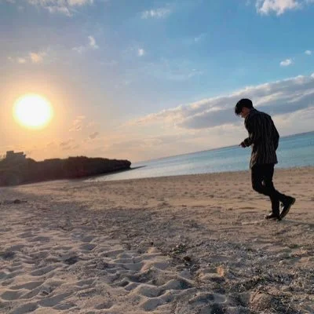

かなで
- しごと
- Webエンジニア
- けいけん
- 6ねんめ
- とくい
- Ruby / Nuxt 3
- おさけ
- ウイスキー
- ゲーム
- スマブラ / キンクル使い
- きろく
- バイオ4 (Switch) NORMAL
NEW GAME 世界16位 - すきなこと
- コウリツ化
- ひづけ
- ----/--/--
- じかん
- --:--:--
- てんき
- しらべています
コマンド
KANADE ISHIDA
HELLO WORLD! 私のポートフォリオサイトへようこそ
よかったらみていってください。
WORKS
SKILL
ABOUT

英語の教員になるために外国語大学に入学し、ソツ業後は英語教員になるかと思いきや在学中にプログラミングにネッチュウしてしまい、IT業界に進むことを決心しました。 ネッ中したイキオいで大学を1年休学し、ベンチャーキ業でインターンをしていました。HTML,CSS, RubyやJavaScriptなどのキホンを学ぶことができました。
フク学し大学4年生をむかえるもジュギョウが4タンイしかのこっていなかったため、自分のやりたいことと別の会社でのプログラミングインターンに時間をフルベットしソツギョウしました。 インターンでのゴエンからシンソツで今の会社に入社し現在に至ります(6年目)。
【ショウライのテンボウ】
自己マン足ではなくちゃんと誰かのためになるプロダクトを作りたいです。
大学時代から友人と口コミサイトを作ったり、自身でもSNS上でアヤしい人のジョウホウを集めるサイトなどを作ってきましたが、ちゃんといろいろな人に使ってもらえるようなアプリにまで作り込むことができませんでした。新たに生まれるサービスにや市場の動向アンテナをはって世のジュヨウにあったアプリを作成したいです。